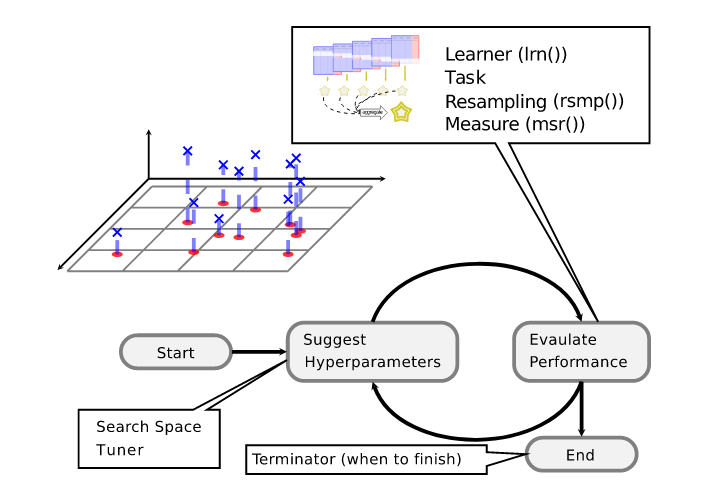

Машинное обучение с использованием пакета mlr3
© Андрей Огурцов
План
Обзор ML-фреймворков на R
Экосистема mlr3
Основные составляющие ML-пайплайна в mlr3
Пайпы и графы
Пример решения реальной задачи с использованием GPU-версии
xgboostвнутри mlr3Полезные ссылки
Вопросы и ответы
ML-фреймворки на R
- mlr3:
mlr3+mlr3pipelines+mlr3learners+mlr3tuning+mlr3measures+…
Очень похож на scikit-learn
В основе лежат R6-классы, в качестве бекенда по умолчанию для табличных данных используется data.table
Все процессы построения моделей объединены в граф вычислений
- tidymodels:
rsample+recipes+parsnip+tune+yardstick+…
Построен вокруг функций, а не объектов с методами, как mlr3 (но есть конвергентное сходство с mlr3)
- (2.5) H2O
Не совсем фреймворк и не совсем на R
Экосистема mlr3
Экосистема mlr3 (продолжение)

Source: https://mlr3verse.mlr-org.com/
Экосистема mlr3 (продолжение)
Дополнительные пакеты:
Analysis of benchmark experiments:
mlr3benchmarkTask interface for data bases:
mlr3dbConnector to OpenML:
mlr3omlAdditional learners:
mlr3extralearnersHyperband tuning algorithm:
mlr3hyperbandSpatio-temporal resampling:
mlr3spatiotempcvetc.
Основные составляющие ML-пайплайна

Основные составляющие ML-пайплайна (продолжение)
# Задача
data("Sonar", package = "mlbench")
task <- TaskClassif$new(id = "Sonar", backend = Sonar,
target = "Class")
task <- as_task_classif(Sonar, target = "Class",
positive = "M")
task## <TaskClassif:Sonar> (208 x 61)
## * Target: Class
## * Properties: twoclass
## * Features (60):
## - dbl (60): V1, V10, V11, V12, V13, V14, V15, V16, V17, V18, V19, V2,
## V20, V21, V22, V23, V24, V25, V26, V27, V28, V29, V3, V30, V31,
## V32, V33, V34, V35, V36, V37, V38, V39, V4, V40, V41, V42, V43,
## V44, V45, V46, V47, V48, V49, V5, V50, V51, V52, V53, V54, V55,
## V56, V57, V58, V59, V6, V60, V7, V8, V9Основные составляющие ML-пайплайна (продолжение)
# Модель
learner_rpart <- LearnerClassif$new("classif.rpart")
learner_rpart <- mlr_learners$get("classif.rpart")
learner_rpart <- lrn("classif.rpart",
predict_type = "prob",
minsplit = 50)
learner_rpart$param_set$values$minsplit <- 33 #insert_named()
learner_rpart## <LearnerClassifRpart:classif.rpart>
## * Model: -
## * Parameters: xval=0, minsplit=33
## * Packages: mlr3, rpart
## * Predict Type: prob
## * Feature types: logical, integer, numeric, factor, ordered
## * Properties: importance, missings, multiclass, selected_features,
## twoclass, weightsОсновные составляющие ML-пайплайна (продолжение)
## n= 120
##
## node), split, n, loss, yval, (yprob)
## * denotes terminal node
##
## 1) root 120 23 R (0.19166667 0.80833333)
## 2) V31< 0.4322 51 22 R (0.43137255 0.56862745)
## 4) V12>=0.1694 31 10 M (0.67741935 0.32258065) *
## 5) V12< 0.1694 20 1 R (0.05000000 0.95000000) *
## 3) V31>=0.4322 69 1 R (0.01449275 0.98550725) *Основные составляющие ML-пайплайна (продолжение)
## <PredictionClassif> for 208 observations:
## row_ids truth response prob.M prob.R
## 1 R R 0.05000000 0.9500000
## 2 R M 0.67741935 0.3225806
## 3 R R 0.01449275 0.9855072
## ---
## 206 M R 0.01449275 0.9855072
## 207 M R 0.01449275 0.9855072
## 208 M R 0.01449275 0.9855072Основные составляющие ML-пайплайна (продолжение)
# Кросс-валидация
cv3 <- rsmp("cv", folds = 3)
resample_results <- resample(task, learner_rpart, cv3)## INFO [15:31:20.369] [mlr3] Applying learner 'classif.rpart' on task 'Sonar' (iter 2/3)
## INFO [15:31:20.454] [mlr3] Applying learner 'classif.rpart' on task 'Sonar' (iter 3/3)
## INFO [15:31:20.503] [mlr3] Applying learner 'classif.rpart' on task 'Sonar' (iter 1/3)## <ResampleResult> of 3 iterations
## * Task: Sonar
## * Learner: classif.rpart
## * Warnings: 0 in 0 iterations
## * Errors: 0 in 0 iterationsПайпы и графы
pca <- po("pca")
filter <- po("filter",
filter = mlr3filters::flt("variance"),
filter.frac = 0.5)
learner_po <- po("learner",
learner = lrn("classif.rpart"))
graph <- pca %>>% filter %>>% learner_po
graph$plot()
Пайпы и графы (продолжение)
Пайпы и графы (продолжение)
## $imputeoor.output
## <TaskRegr:y> (4 x 2)
## * Target: y
## * Properties: -
## * Features (1):
## - fct (1): x## y x
## 1: 1 1
## 2: 1 2
## 3: 1 3
## 4: 1 3
## 5: 1 .MISSINGПайпы и графы (продолжение)
## $fixfactors.output
## <TaskRegr:y> (4 x 2)
## * Target: y
## * Properties: -
## * Features (1):
## - fct (1): x## y x
## 1: 1 1
## 2: 1 2
## 3: 1 3
## 4: 1 3
## 5: 1 <NA>Пайпы и графы (продолжение)
## $imputemode.output
## <TaskRegr:y> (4 x 2)
## * Target: y
## * Properties: -
## * Features (1):
## - fct (1): x## y x
## 1: 1 1
## 2: 1 2
## 3: 1 3
## 4: 1 3
## 5: 1 3Полезные ссылки
Учебник от разработчиков https://mlr3book.mlr-org.com/index.html
Шпаргалка https://cheatsheets.mlr-org.com/mlr3.pdf
Галерея примеров https://mlr3gallery.mlr-org.com/
Слегка устаревший хабрапост https://habr.com/ru/company/ods/blog/491566/
Коннектор к
torchс реализацией сети tabnet https://github.com/mlr-org/mlr3torchИнтерпретация моделей mlr3 https://cran.r-project.org/web/packages/flashlight/vignettes/mlr3.html
Вопросы
Спасибо за внимание!
Презентация создана при помощи revealjs